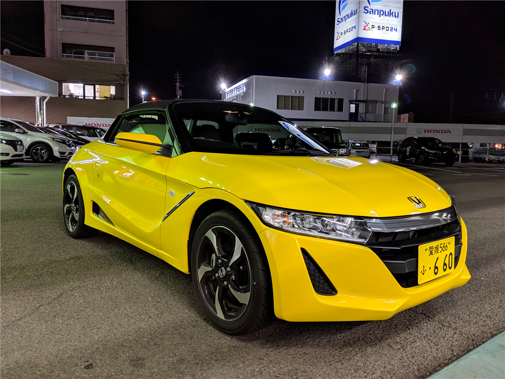
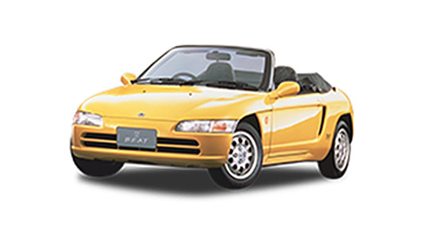
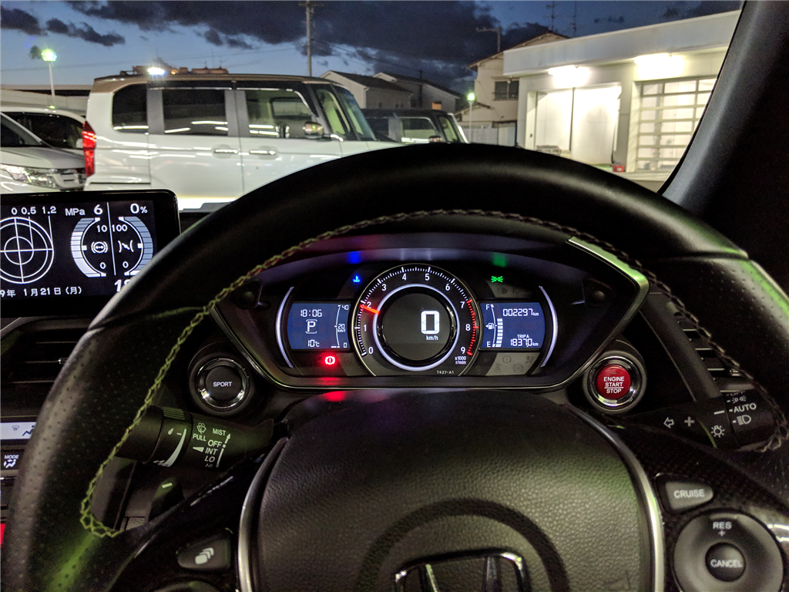
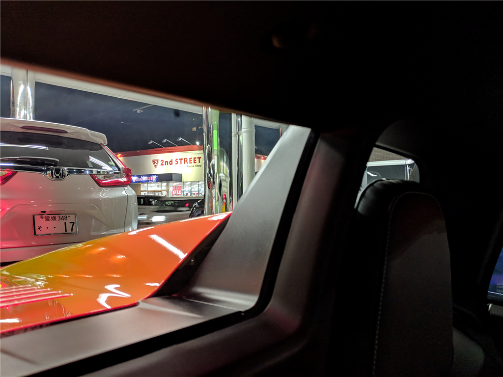
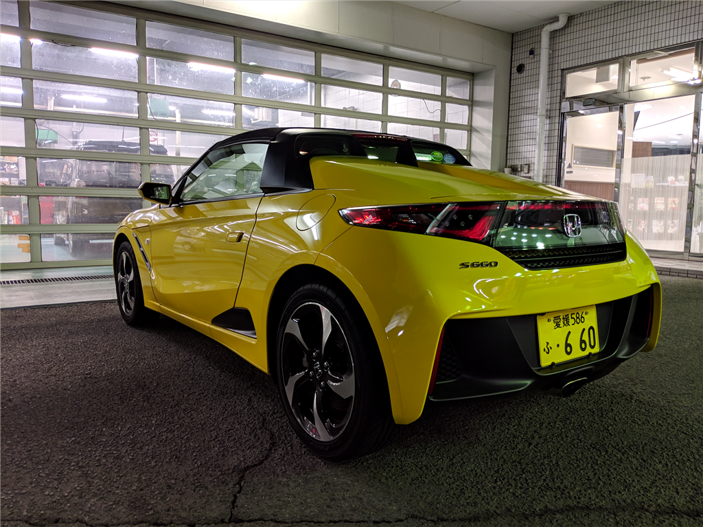
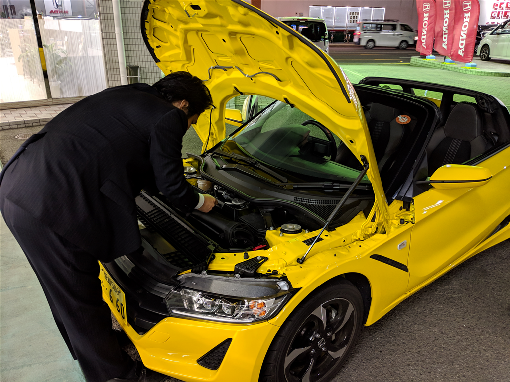
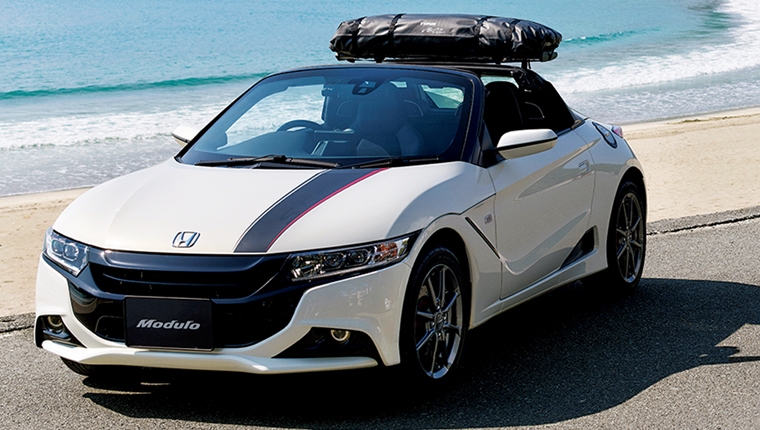
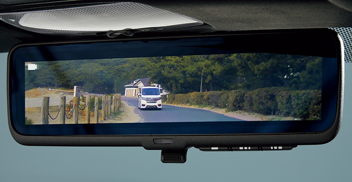
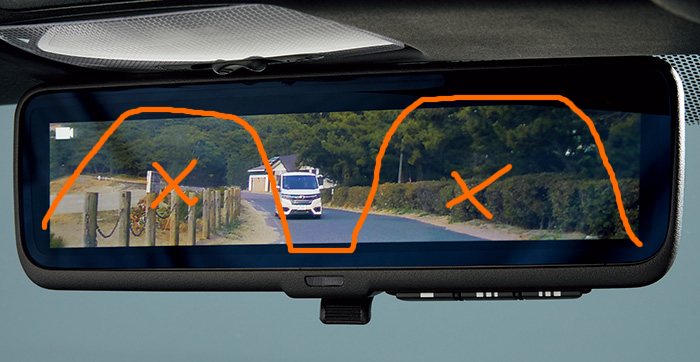

1月21日：S660 の試乗をしてきた → 気絶しているうちに……
執筆日時：

Honda Cars 愛媛の某店（家から徒歩10分ぐらい？）で、S660 の試乗をしてきました。ほんとは試乗車の用意がないお店だったのだけど、U さんが営業さんを紹介してくださって、その営業さんが手配をしてくれた。らっきー！
ちなみに、Honda の S660 というのは軽自動車規格のスポーツカーです。ミッドシップレイアウト*1のオープンカーだぜ！――エンジンは N-BOX あたりと一緒らしいがな！（ｽﾞｺｰ

10年ぐらい前、S660 の先代にあたるビートにずっと乗ってたこともあり、クルマを買うならこれかなーと思っていたんだよね。わいとビートの間にはいろいろと因縁があるんだけど*2...…まぁ、それは気が向いたらおいおい語るとして。マジで中古でビートを買いなおそうかなぁと思わんでもなかったのだけど、さすがに10年前でさえ結構おんぼろだったのに、さらに10年たった今、程度のいいものを常識的な維持費で乗り続けるのはだいぶ難しいだろう。
そんなわけで、とりあえず話聞きながら、見積もりでも作ってもらおうかなーと思って出かけたのだが、少し気絶している間に、契約書ができていて、契約金をクレカで支払っていた。ハンコを持っていくのを忘れたぐらいだから、その場で契約する気はあまりなかったのだけど、試乗したら結構気に入ってしまったようだ。
見た目＆運転

パッと見、「かわいいなー！」って感じ。でも、カッコよさもあって、大変よろしい。
営業さんを隣に乗せて、夕方の帰宅ラッシュの中をゆるゆると走った。試乗車は CVT モデルで、運転は何も難しい所がない。エンジンもたいしたことがなくて、アクセルを戻した時にぷしゅっというのが「それらしい」だけ。渋滞の街中運転では、コーナリングなどわかろうはずもない。ビートがハンドルを入れるだけでクイッ、クイッと反応したのに対し*3、こっちはドンガメのようだ。隣に初対面の人を乗せているのもあり、なんだか教習所の試験をやっているような気分。
それでも、なんかよくわからない特別感があって、結構よかった。軽自動車のわりに、内装が豪華だからかな。着座位置の低さはビートで慣れてるし、乗り降りにも支障は感じなかった。自分は168cmだけど、頭にもだいぶ余裕がある。要するに、せまっ苦しさはあまりない。
先代ビートはレカロのバケットシートを乗せてたが、この試乗車のシートもなかなかそれに負けてない。座り心地はいいのに、しっかりカラダを固定してくれる感じがある。あぁ、もっとバーッと走らせてえなぁ、このままどっかと奥へばしゅーんと行ってしまいたいなぁ……と思ったが最後、もう買う気満々になってた。

ただ、斜め左後方の視界だけはちょっと気になった。聞いてたほどわるくはないけど、それでもちゃんと気を付けていないとパッとは自転車の存在なんかには気が付かなさそう。ルームミラーをデジタルにしようか、と真面目に検討した。ちなみに、センターディスプレイはそんなに邪魔には感じない。後付け感が半端ないけど。

デザインは……ビートほどのエレガントさ（大阪弁でいう「シュッとしてる」感じ）はないかなって思うけど、これはこれで十分ありな感じ。お尻がでかいな？ それもまたよし。でも、こんなにボリュームがあるのに荷物は全然入らないんだよなぁ……汎用のエンジンを突っ込んだ苦労がしのばれる。
ホロの着脱

S660 のホロは、くるくる巻いてボンネットに入れる。割と重量があるけど、作業自体はそんなに難しくない。営業さんに外してもらい、着けるのだけ少しだけ手伝ったけど、ズレてはまらないなんてことはなかった。パスっと収まって、ハンドルをグイってするだけでしっかり固定される。
まぁ、ビートみたいに気が向いたとき、運転席からぶわーっと開けられる方がいいに決まってるけど、あれはあれでホロの劣化で雨漏りもあった。ビシッと閉まるこっちも悪くないと思う。むしろ、手がかかりすぎて笑える。楽しい！
ただし、夏場は閉めっぱなしになると思われるので、ハードトップが欲しいかな。とりあえず急いで必要なものでもないので、納期の確認だけお願いした。
お見積り
自分はあまりホイールや内装にはこだわらないので、上位グレードの α ではなく、安い β にした。走行性能に変わりはない。白い軽自動車ナンバー？ コーティング？ そういうのも全部外してもらった。営業さんのおすすめするフロアマットだけは、「それぐらいは買っておこうか」って感じ。あと、どうせメンテナンスはちゃんとするのでメンテナンスパック的なものも頼んだ。
そうやっていろいろケチった代わりに、ルーフキャリアはしっかりつけてもらった。

こういう荷物の積み方は賛否両論あるだろうけど、先代ビートも背中にキャリアを付けて、助手席に人が乗る＆モノがあふれたときは後ろに括りつけて走ってた。なので、これは自分の中では譲れない懐かしポイント。取付方法などを根掘り葉掘り聞くと、このキャリアは外すこともできる（付けるときは穴をあけるが、キャリアを外した時に穴を埋めるキャップがついてくる）。付けておいて後悔することはないだろう。
悩んだのはメーカーオプションのセンターディスプレイ。こいつには走行中の情報（加速度とか？）を表示したり、専用スマホアプリからナビを出力したり、バックの際に後ろの様子を写すモニターになったりする。しかし、走行中に普通のナビアプリの画面をディスプレイに表示することはできないらしい。要するに、専用スマホアプリがしょっぱかったらそれまでだ。走行中の情報は……そんなに見ないだろう。唯一、バックモニターに魅力を感じたけど、これもオンになるときはギアをバックに入れたとき（つまり、駐車するときだけ）だけで、走行中は表示できないらしい。走行中もバックの様子を流せれば、絶望的な後方視界を補えるかと思ったんだが。

代わりに検討したのが、カメラで写した後方をルームモニターに映し出す「アドバンスドルームミラー」。

カメラ越しだから、後ろが広く見えるんだな。ちなみに、普通のミラーとしても使えるっぽい（当然か！？）。
センターディスプレイを諦めれば+5万円ぐらいで設置できるようで、安全のためにはそれぐらいの出費は致し方ないかと思ったのだが、こいつ、後方をカメラで撮るくせに、それを保存しないらしい。保存してくれれば後ろのドラレコを任せられるんだが……いいお値段するんだからそれぐらいやってくれてもいいのにな。結局、あとから追加できるディーラーオプションだったこともあり、今回は見送った。
というわけで、ほぼ ETC とルーフキャリアのみの追加で見積もりは 230 万円ちょっと。無職のお仕事に従事してる関係で、ローン通らなかったら悲しいなってのもあり、一括で支払うことにした。ほら、万が一ローン通っちゃったら「どうせだし、あれもつけようかなー」「分割だしこれもつけちゃえ！」って無駄遣いしちゃうしね。必要のないものは極力買わない（営業さんも、ゴリ押ししてくることはなく、要求に親身に答えてくれて大変助かった）。まずは、任意保険とかちゃんと入る方が大事。絶望的な斜め左後方の視界は、ダサくても補助ミラーを導入して解決することにする。バックモニターとドラレコを一緒に増設してもいい。
あとは全裸で正座待機して、3月の納車を待つのみ。最近はお仕事が詰まってしんどかったけど、これで1月2月を乗り切れそうな気がする。